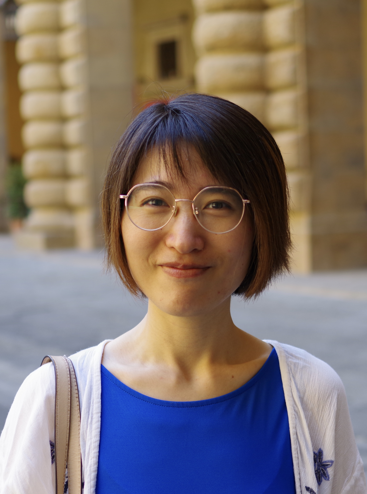
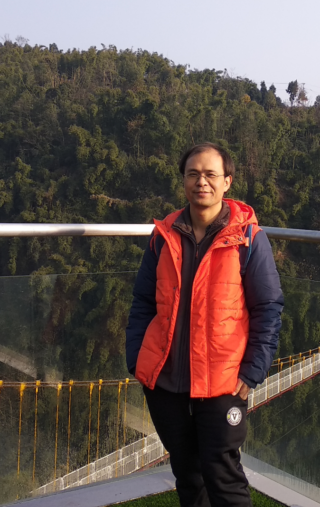
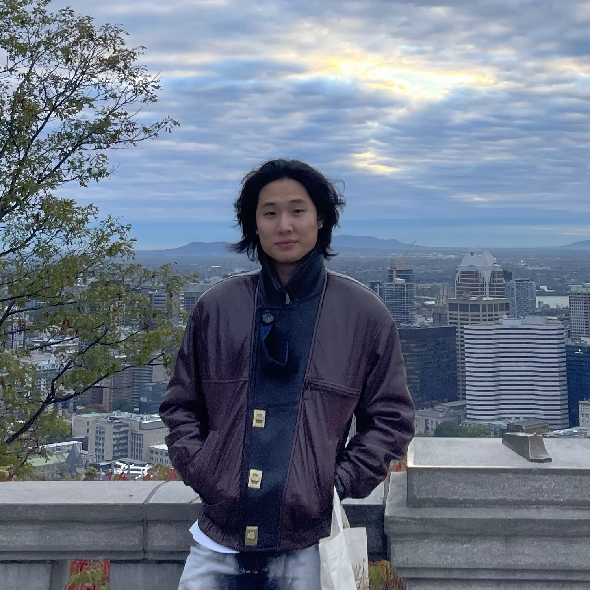
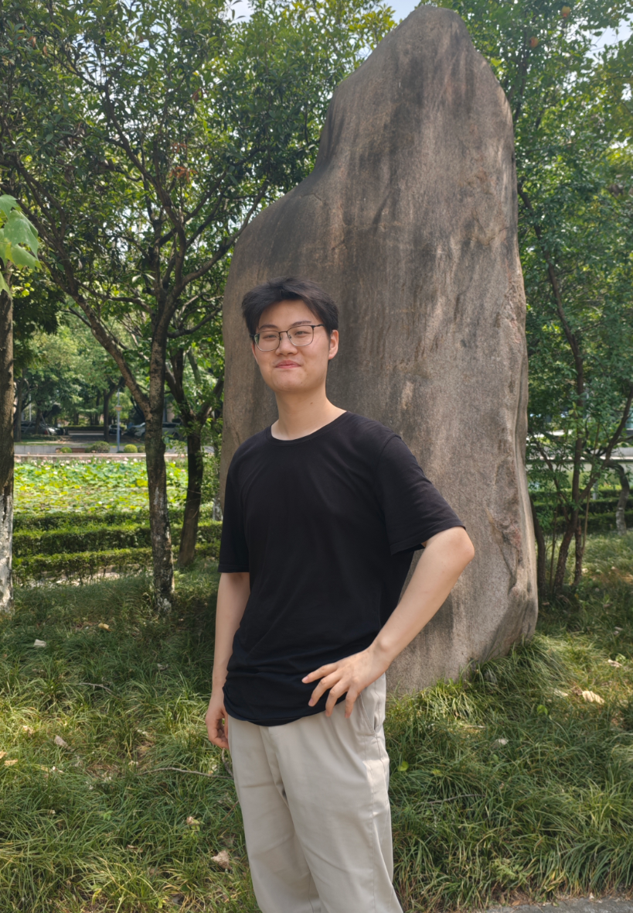
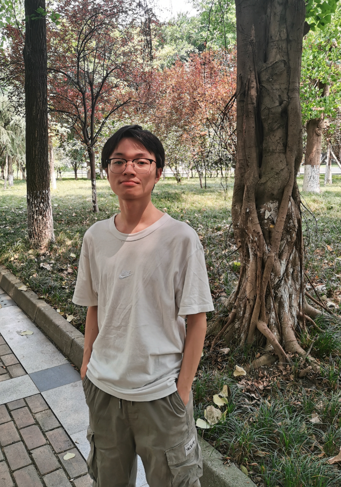
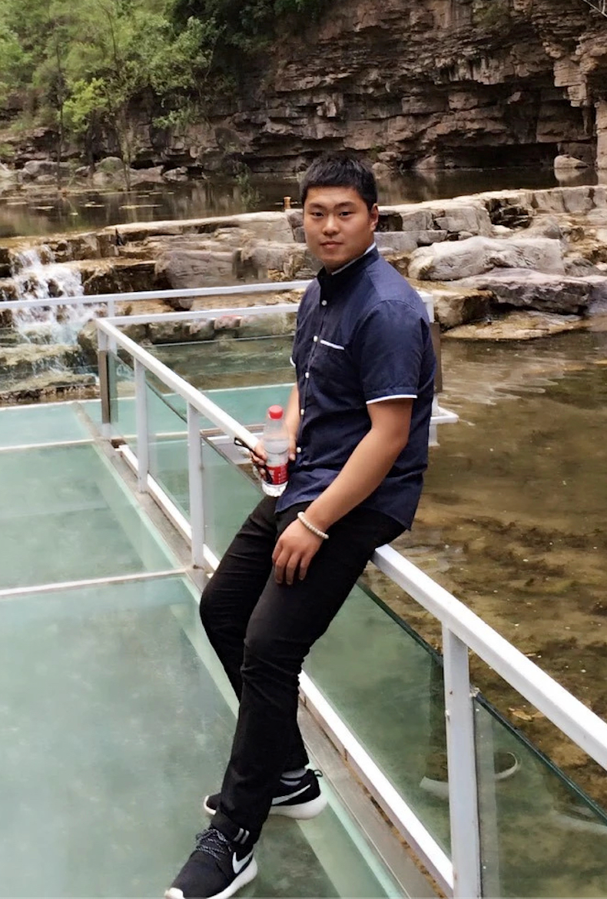
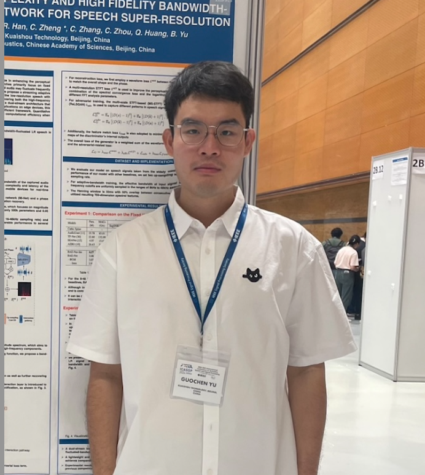
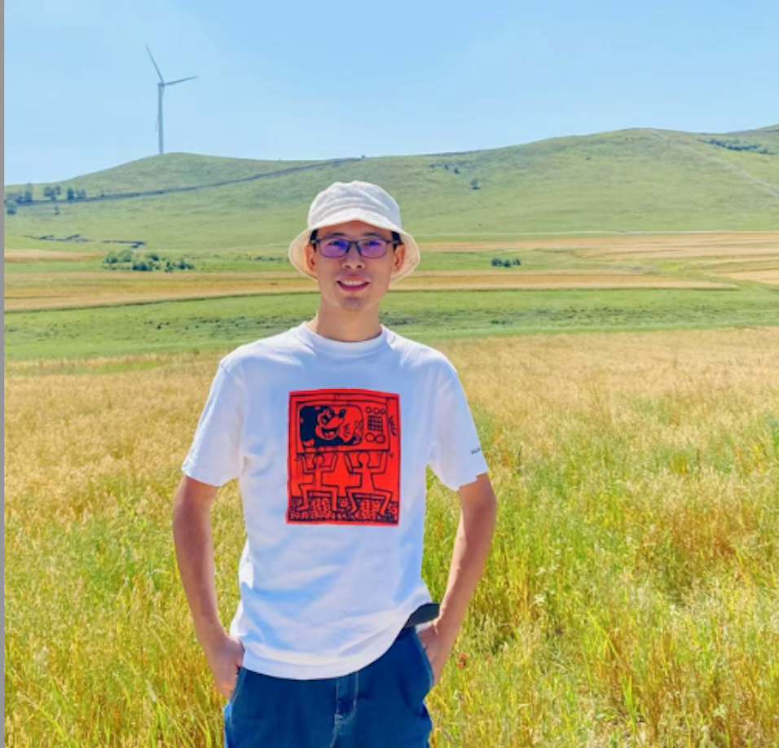

汇聚顶尖AI专家，引领探索实践之路

PhD, B Associate Professor, Chief Scientist
从音视频顶尖的K公司到全球Tier1的Z公司，专注语音合成、语音交互大模型和语音增强技术研究与产业化，发表顶会论文20余篇。将前沿学术研究与产业应用完美结合。
中文词向量资源库等开源项目创建者，在GitHub获得超过一万星标，为中文NLP社区发展做出重要贡献。
将前沿学术成果转化为实用技能，善于用实际案例帮助学生理解复杂的NLP概念。课程既有严谨的理论基础，又紧密结合最新技术发展趋势。

Chief Programmer
从DOS时代的传奇软件到现代AI应用，25年技术生涯见证中国软件业发展。精通底层系统架构，擅长私有模型部署、分布式系统设计和高性能数据处理。
HJ超级解霸核心程序员，参与开发影响一代中国用户的经典软件。深度参与底层音视频解码算法研发，为数百万用户带来流畅的多媒体体验。
深度理解LLM底层原理，设计过处理TB级数据的分布式爬虫集群，在去中心化网络架构方面有独到见解。

Senior AI Engineer
麦吉尔大学计算机科学与数学双学位，Beebee AI核心开发工程师，专注RAG系统和LLM应用开发。Vito拥有两年AI产品开发经验，主导构建多个企业级知识管理系统。
设计并实现支持文本、图像等多种数据格式的智能检索系统。构建智能意图理解系统，确保查询被精准分发到最适合的处理模块。
McGill大学游泳队退役选手，50米蛙泳32.5秒。力量举总成绩550公斤（深蹲215kg、卧推125kg、硬拉210kg）。将运动员的坚韧精神融入技术攻坚。

AI Data Engineer
重庆对外经贸学院数据科学与大数据技术专业，BEEBEE AI核心数据工程师，专注大规模数据采集和AI应用开发。在爬虫技术和并发编程方面经验丰富。
通用爬虫系统成功部署生产环境，AI Excel解析工具显著提升用户工作效率。主导开发了多个生产级数据处理系统。
结合丰富项目实战经验，注重培养工程思维和产品化能力。善于用实际案例帮助学生理解复杂的算法原理和系统架构。

AI Data Engineer
爱丁堡大学数学与统计学士（一等荣誉），帝国理工学院统计系数据科学硕士（卓越级），BEEBEE AI后端软件工程师。专注于基于大语言模型的生产力工具研发。
用统计学思维解读AI算法本质，注重数学基础与工程实践的平衡。将严谨的数学思维与实用的工程技能相结合。

AI Algorithm Engineer
专注NLP算法开发和AI产品化，拥有两年AI算法开发经验。深度参与第二大脑考试/写作智能体开发，负责微信、飞书等外部应用对接。
主导开发考试/写作智能体，成功对接微信、飞书等主流平台。在API集成和第三方服务对接方面有着丰富实战经验。
理论实践并重，善于化繁为简，提供个性化技术指导。注重理论与实践的深度结合，营造轻松活跃的学习氛围。

Senior Frontend Engineer
拥有8年前端开发经验，精通多端开发和现代前端技术栈。具备全面的项目开发能力，熟练掌握微信小程序、H5、PC、App等多平台开发。
在线商城、后台管理系统、SaaS工具、数据大屏等多个完整商业项目。深度参与多个完整项目的开发，积累了丰富的商业项目经验。
结合丰富商业项目经验，注重实战应用和代码质量培养。善于用实际案例帮助学生理解前端开发的核心概念和最佳实践。

Speech Algorithm Expert, PhD
从音视频顶尖的K公司到全球Tier1的Z公司，专注语音合成、语音交互大模型和语音增强技术研究与产业化，发表顶会论文20余篇。
Hugo长期专注于语音合成与语音增强算法研发、大规模语音交互模型设计与优化，以及多模态AI系统的集成与产业化落地。曾发表顶级会议论文20余篇，涵盖语音合成、语音识别、语音增强等方向，主导多项语音AI产品的研发与上线，服务数千万用户，并多次获得国际语音技术竞赛奖项。Hugo积极推动语音AI技术在短视频、智能助手等领域的广泛应用，致力于让AI语音更自然、更智能。
AI Evangelist, Content Creator
AI技术科普自媒体人，电子科技大学计算机硕士，Nokia高级软件工程师7年，现居爱尔兰。专注将前沿AI技术转化为通俗易懂的知识内容，获得广泛关注。 多平台矩阵 B站「五里墩茶社」、微信「01麻瓜社」、知识星球「小木头的AI星球」、YouTube「01Coder」等平台内容创作者。
AI布道者，技术极简主义者，视频+文字双栖创作者
AI技术科普自媒体人，电子科技大学计算机硕士，Nokia高级软件工程师7年，现居爱尔兰。专注将前沿AI技术转化为通俗易懂的知识内容，获得广泛关注。多平台矩阵 B站「五里墩茶社」、微信「01麻瓜社」、知识星球「小木头的AI星球」、YouTube「01Coder」等平台内容创作者。
Core Algorithm Engineer
6年AI算法工程经验的技术专家。CVPR 2020人脸表情比赛冠军，专注多模态大模型、视频理解、OCR算法开发。 Henry拥有丰富的AI算法产业化经验，曾在K、N、H等知名企业担任核心算法工程师。他在深度学习模型训练、算法优化、端侧部署等方面经验丰富，擅长将前沿AI技术转化为实用的商业解决方案。
北京工业大学软件工程硕士 全球顶尖视频社交媒体核心算法工程师
6年AI算法工程经验的技术专家。CVPR 2020人脸表情比赛冠军，专注多模态大模型、视频理解、OCR算法开发。Henry拥有丰富的AI算法产业化经验，曾在K、N、H等知名企业担任核心算法工程师。他在深度学习模型训练、算法优化、端侧部署等方面经验丰富，擅长将前沿AI技术转化为实用的商业解决方案。
Backend Engineer, MSc
13年软件工程与技术领导经验，曾领导20人工程团队，专注大规模分布式系统架构、云原生技术和AI解决方案开发。 吴子豪拥有丰富的大型互联网公司技术架构经验，主导构建了支持十亿级索引的搜索引擎系统和多个AI驱动的产品解决方案。他在系统架构设计、DevOps自动化、云基础设施优化等方面经验丰富，擅长将前沿技术转化为稳定高效的产品级方案。
英国圣安德鲁斯大学软件工程硕士 全球顶尖游戏工作室后端工程师
13年软件工程与技术领导经验，曾领导20人工程团队，专注大规模分布式系统架构、云原生技术和AI解决方案开发。吴子豪拥有丰富的大型互联网公司技术架构经验，主导构建了支持十亿级索引的搜索引擎系统和多个AI驱动的产品解决方案。他在系统架构设计、DevOps自动化、云基础设施优化等方面经验丰富，擅长将前沿技术转化为稳定高效的产品级方案。

Fintech Architect, MSc
15年金融科技领域经验，新西兰居民。曾在顶级金融机构总行担任核心系统架构师，专注大规模金融分布式系统、支付平台和微服务架构设计开发。 Roy Nee拥有丰富的金融核心系统架构经验，主导构建了支持2.5亿日请求的信用卡系统和多个获奖的金融科技项目。他在高并发交易处理、分布式架构设计、金融业务系统优化等方面经验丰富，擅长将复杂的金融需求转化为高效安全的技术解决方案。
北京邮电大学计算机硕士 澳洲Fintech上市公司架构师
15年金融科技领域经验，新西兰居民。曾在顶级金融机构总行担任核心系统架构师，专注大规模金融分布式系统、支付平台和微服务架构设计开发。Roy Nee拥有丰富的金融核心系统架构经验，主导构建了支持2.5亿日请求的信用卡系统和多个获奖的金融科技项目。他在高并发交易处理、分布式架构设计、金融业务系统优化等方面经验丰富，擅长将复杂的金融需求转化为高效安全的技术解决方案。